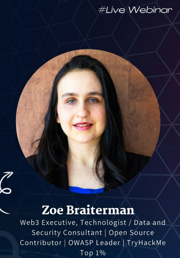
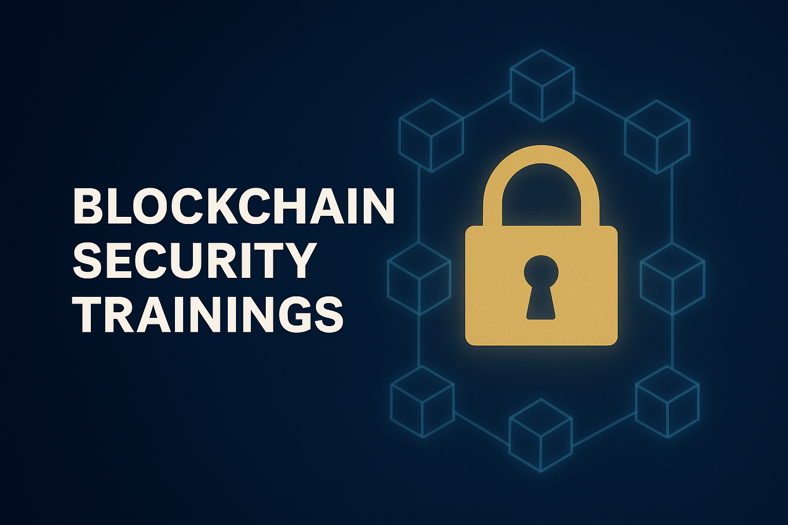

Security Trainings
OWASP Talks and Trainings
- "Securely Diving Into Vibe Coding"
Weekly PurePoint International Consciously Secure Leadership Series
- "Budgeting for security in 2026"
- "Zero-trust principles in plain English"
- "The intersection of AI and social engineering"
- "Intellectual property concerns in the age of AI"
- "Evolving views on cybersecurity objectives for businesses”
- "A primer on AI privacy”
- "APIs and sensitive data exposure risks"
- "The interdisciplinary nature of AI safety"
- "Types of system authorization"
- "Ensuring IT system reliability within your organization"
- "The importance of continuous asset discovery"
- "The modern phishing landscape"
- "The intersection of information security and transparency within an organization”
- "Techniques for protecting yourselves and your employees from online impersonation”
- "Best practices for SOC2"
- "Security and usability implications of authentication methods"
- "Logging for accountability"
- "An overview of incident response and management"
- "Introduction to cyber crisis management"
- "Threat Modeling vs Risk Assessment"
- "Implications of Self-sovereign Identity (SSI)"
- "An Introduction to Data Retention Policies"
- "Alternatives to Passwords for Authentication”
- "Firewall Configurations in Plain English”
- "Third Party Risk Management"
- "Building a bug bounty program within your organization"
Securzy Webinars

- "An Introduction to Email Security"
- "The Intersection of AI and Cybersecurity”
Blockchain Security Trainings

- "Cybersecurity Awareness for Cryptocurrency Holders and Investors"